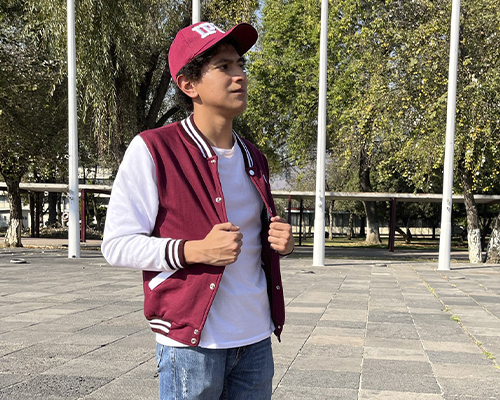

About Me
As a Full Stack Designer, I seamlessly blend the worlds of UI/UX design and front-end development, bringing a unique combination of creativity and technical expertise to digital projects. My passion lies in crafting user-centric experiences that resonate across platforms. With a background in Bachelor's degree in computer science, I thrive on innovating at the intersection of design and technology. Known for my proactive and collaborative approach, I have a track record of taking on leadership roles and working seamlessly with cross-functional teams. My goal is to contribute to projects that not only meet technical specifications but also resonate with users on a meaningful level.If you're seeking a Full Stack Designer with a passion for crafting impactful experiences on Android and iOS platforms, let's connect. I am excited about the opportunity to bring my skills and enthusiasm to your team.